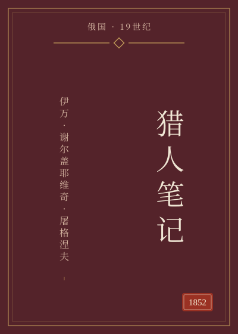
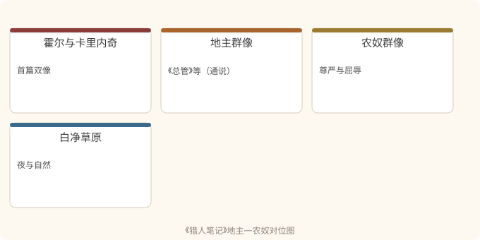

猎人笔记
一、基本信息
| 作者 | 屠格涅夫 |
|---|---|
| 成书/出版 | 1852年首版（Britannica：first published in Russian as Zapiski okhotnika in 1852），1870年代增补 A Sportsman's Sketches (work by Turgenev) — Encyclopaedia Britannica（百科全书） |
| 国别/地区 | 俄国 |
| 时代 | 近代 · 19世纪 |
| 体裁 | 短篇小说集 |
| 语言 | 俄语 |

《猎人笔记》地主—农奴对位图（主题·结构图）
二、创作背景
Britannica：'The stories concern life in rural Russia, in particular the relationship between landowners and their serfs'（俄国乡村生活——尤其地主与农奴的关系）。
视角：以猎人行脚串起诸篇；农奴的形象'always circumscribed by their serfdom'（总被农奴制框限——Britannica）。
三、内容脉络
名篇：《霍尔和卡里内奇》（首篇）、《白净草原》、《木木》、《总管》（篇目通说待核）。
地主群像与农奴群像的对位（Britannica 语境）。
四、主要人物表
| 人物 | 身份 | 说明 |
|---|---|---|
| 霍尔与卡里内奇 | 两个农奴 | 理性与诗性双像（首篇，通说） |
| 猎人 | 叙述者 | 行脚视角 |
五、主题与艺术特点
- 农奴制的日常残酷：以'风景'写'制度'（通说）。
- 人性的尊严在底层（通说）。
- 俄罗斯自然风景的抒情化（通说）。
六、影响与评论
- Britannica：1852年初版——屠格涅夫第一部获得广泛承认的重要作品（语境）。
A Sportsman's Sketches (work by Turgenev) — Encyclopaedia Britannica（百科全书） - 对俄国农奴制舆论的影响（通说待核——1861年废除农奴制的背景常被联系到本书）。
A Sportsman's Sketches (work by Turgenev) — Encyclopaedia Britannica（百科全书）
七、阅读建议
难点
- 俄罗斯农奴制历史背景注释。
- 散文化的篇幅结构。
- 丰子恺译本（译文名著精选，通说待核）。
- 力冈译本（通说待核）。
先读《霍尔和卡里内奇》《白净草原》→《木木》。
八、待核实
- 《木木》是否属初版（1852增订情况）待核。
- 丰子恺译本信息核对。
- 亚历山大二世受本书影响说（史料出处）待核。